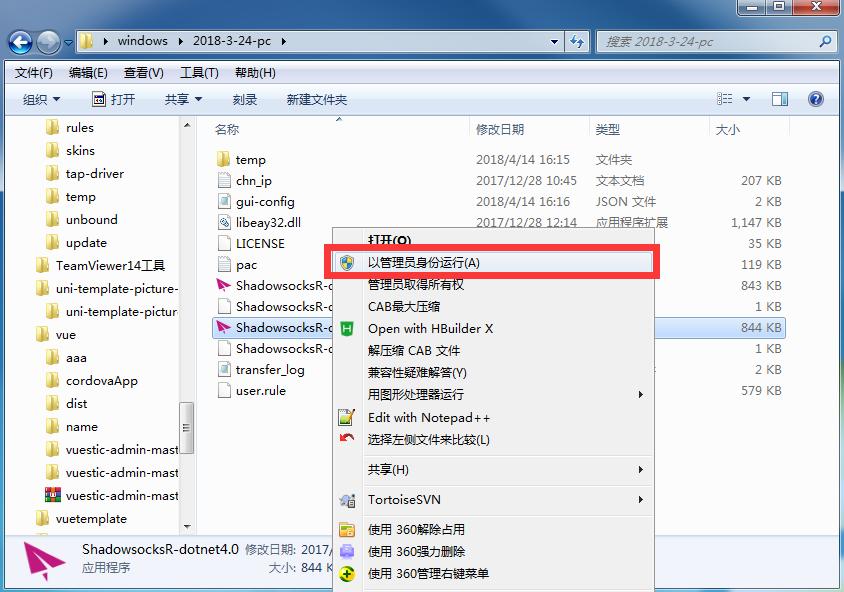

安装大致步骤(如需远程，请自行安装 teamviewer，QQ卡 不远程！)
1:索要订阅地址URL,格式形如:http://127.0.0.1/getssr1?order_no=1234567,使用时候直接复制,不要复制乱码
2:下载软件 并完全解压(不要在压缩包内打开,电脑没装解压缩工具,请自行安装),然后用管理员身份运行ShadowsocksR-dotnet4.0,

3:步骤2中,如果防火墙或者安全软件拦截,请允许/关闭上述软件,在右下角寻找绿色小飞机,右键出现菜单，按照图示寻找"服务器订阅设置",点击进入,会出现步骤4的界面
4:将步骤1里面的订阅地址覆盖原来的默认地址,然后点击确定，窗口会关闭
5:订阅地址我们已经设置好了,接下来获取服务器有三种方式
a:重启软件:右下角纸飞机图标右键，弹出菜单选择退出,然后重新点击软件启动图标,稍等片刻，会提示:服务器订阅更新成功
b:更新SSR服务器订阅
c:更新SSR服务器订阅(不通过代理)
注:如果a,b,c三种方式都报失败,请检查网络连接
6:选择服务器准备上网:右键右下角纸飞机图标-->服务器-->星之所在-->看到服务器列表选中点击
7:测试是否成功,不成功回到步骤6重新选择服务器
8:如果反复选中几个服务器仍然不成功,请切换PAC或全局模式
注意事项
- 如果出现大批服务器不可用，请在"服务器-编辑服务器"菜单里面删除服务器，只留一个，然后更新订阅（重启/手动更新）
- Donec nulla non metus auctor fringilla.
- Donec nulla non metus auctor fringilla.